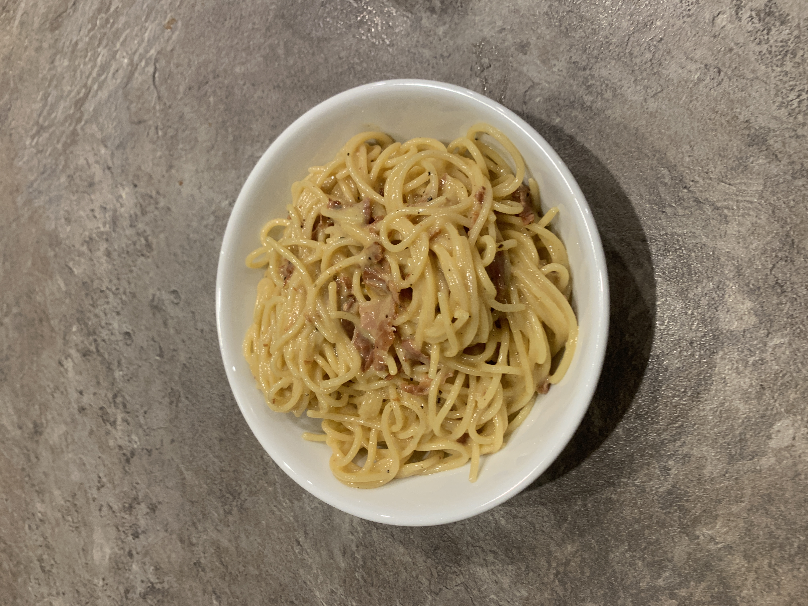

Spaghetti Carbonara

Carbonara is one of my absolute favorite dishes because it is so simple and quick, and also tastes amazing. It only uses a few ingredients, so its just a cheap easy classic!
ingredients
- 200g spaghetti
- 100g guanciale or pancetta
- 2 large eggs
- 1 large egg yolk
- 50g Pecorino Romano, finely grated
- Freshly ground black pepper
- Salt for the pasta water
Instructions
- Bring a pot of salted water to a boil and cook the spaghetti until al dente.
- While the pasta is cooking, cut the guanciale or pancetta into small pieces and cook it in a pan over medium heat until crispy.
- In a bowl, whisk together the eggs, egg yolk, Pecorino Romano, and plenty of black pepper.
- Before draining the pasta, save about a cup of the pasta water.
- Add the drained spaghetti to the pan with the guanciale and toss everything together.
- Take the pan off the heat. Add the egg and cheese mixture and stir quickly so the eggs become creamy instead of scrambling.
- Add a little pasta water as needed until the sauce is smooth and coats the spaghetti.
- Serve immediately with extra Pecorino Romano and black pepper on top.
Serves: 2